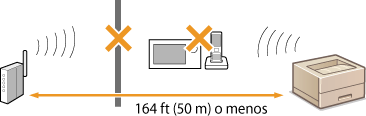

0KXF-03J
Además de esta sección, consulte Problemas comunes.
La red inalámbrica y la red cableada no pueden estar conectadas simultáneamente. En cambio, sí se puede utilizar el USB y la red inalámbrica o el USB y la red cableada simultáneamente.
Si el equipo está conectado a una red inalámbrica, compruebe que el indicador de  (Wi-Fi) está encendido y que la dirección IP está configurada correctamente y, a continuación, vuelva a iniciar el IU remoto.
(Wi-Fi) está encendido y que la dirección IP está configurada correctamente y, a continuación, vuelva a iniciar el IU remoto.
Parte delantera
Visualización de las opciones de red
(Wi-Fi) está encendido y que la dirección IP está configurada correctamente y, a continuación, vuelva a iniciar el IU remoto. Parte delantera
Visualización de las opciones de red
Si el equipo está conectado a una red cableada, compruebe que el cable está firmemente conectado y que la dirección IP está configurada correctamente y, a continuación, vuelva a iniciar el IU remoto.
Conexión a una red cableada
Visualización de las opciones de red
Conexión a una red cableada
Visualización de las opciones de red
¿Está utilizando un servidor proxy? Si está utilizando un servidor proxy, agregue la dirección IP del equipo a la lista [Excepciones] (direcciones que no utiliza el servidor proxy) en el diálogo de la configuración proxy del navegador web.
¿Está Ia comunicación de su ordenador restringida por un firewall? Si el IU remoto no puede visualizarse porque la configuración es incorrecta, utilice el botón de restauración para inicializar las opciones de administración del sistema.
Restricción de la comunicación utilizando firewalls
Inicialización mediante el botón de restauración
Restricción de la comunicación utilizando firewalls
Inicialización mediante el botón de restauración
Es posible que las opciones de conexión no estén configuradas correctamente. Utilice la MF/LBP Network Setup Tool para configurar las opciones de conexión.
Guía de instalación del controlador de impresora
Guía de instalación del controlador de impresora
Cuando se conecte a una red inalámbrica, compruebe si el equipo está bien instalado y listo para conectarse a la red.
Si el equipo no puede conectarse a la red inalámbrica
Si el equipo no puede conectarse a la red inalámbrica
¿Utilizó la MF/LBP Network Setup Tool para configurar las opciones de conexión de la red cableada? Si no la utilizó, no puede cambiar el método de conexión de red inalámbrica a red cableada en este equipo. Cuando configure las opciones, seleccione [Instalación personalizada] como método de configuración.
Guía de instalación del controlador de impresora
Guía de instalación del controlador de impresora
Utilice un cable Ethernet directo para la conexión de red cableada.
Compruebe si el concentrador o el router está encendido.
No conecte el cable al puerto UP-LINK (cascada) del concentrador.
Cambie el cable de LAN.
 |
|
 |
|
Compruebe el estado del ordenador
¿Ha finalizado la configuración del ordenador y el router inalámbrico?
¿Los cables del router inalámbrico (incluido el cable de alimentación y el cable de LAN) están correctamente enchufados?
¿Está encendido el router inalámbrico?
Si el problema persiste incluso después de comprobar lo anterior:
Apague todos los dispositivos y, a continuación, vuelva a encenderlos.
Espere un momento e intente conectarse de nuevo a la red.
|
|
|
||||
 |
 |
Compruebe si el equipo está encendido
El indicador (Alimentación) no se ilumina si el equipo no está encendido.
Si el equipo está encendido, apáguelo y vuelva a encenderlo de nuevo.
|
||
|
|
||||
 |
 |
Compruebe el lugar de instalación del equipo y el router inalámbrico
¿El equipo está demasiado lejos del router inalámbrico?
¿Hay algún obstáculo entre el equipo y el router inalámbrico, como por ejemplo una pared?
¿Hay algún dispositivo que emita ondas de radio cerca del equipo, como por ejemplo un horno microondas o un teléfono inalámbrico digital?
 |
||
|
|
||||
 |
Restablezca las opciones de red inalámbrica
|
 |
|
Si necesita configurar la conexión manualmente
Si el router inalámbrico está configurado como se describe a continuación, introduzca la información necesaria manualmente.
Está activado el modo sigiloso.
Está activado rechazar CUALQUIER conexión*.
El número de clave WEP que debe utilizarse se ha establecido entre 2 y 4.
Está seleccionada la clave WEP (hexadecimal) generada automáticamente.
* Función en la que el router inalámbrico rechaza la conexión si el SSID del dispositivo que desea conectarse está establecido en "CUALQUIERA" o está en blanco.
Si necesita cambiar la configuración del router inalámbrico
Si el router inalámbrico está configurado tal y como se describe a continuación, cambie la configuración del router.
El filtro de direcciones MAC está activado.
Si solo se utiliza IEEE 802.11n para la comunicación inalámbrica, se selecciona WEP o el método de cifrado WPA/WPA2 se establece en TKIP.
|
Cambie el cable USB. Si el cable USB es largo, cámbielo por otro más corto.
Si utiliza un concentrador USB, conecte el equipo directamente al ordenador con un cable USB.
¿Están conectados correctamente el servidor de impresión y el ordenador?
¿Funciona el servidor de impresión?
¿Tiene derechos de usuario para conectarse al servidor de impresión? Si no está seguro, pregunte al administrador del servidor de impresión.
¿Está activada la [Detección de redes]? (Windows Vista/7/8/Server 2008/Server 2012)
Activación de [Detección de redes]
Activación de [Detección de redes]
¿Aparece en la red el equipo entre las impresoras del servidor de impresión? Si no aparece, póngase en contacto con el administrador de la red o del servidor.
Abrir Impresoras compartidas en el servidor de impresión
Abrir Impresoras compartidas en el servidor de impresión